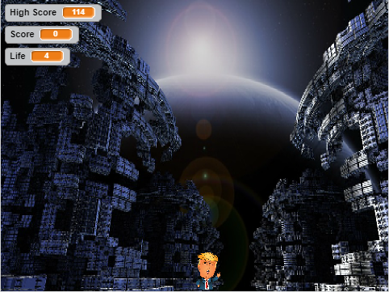
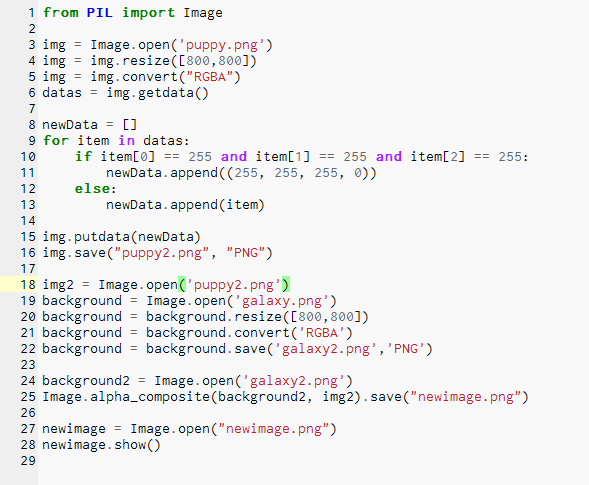

Scratch Game:Donald Trump the Ogre Hunter

Reflection: The purpose of the game is to get the main character to defeat the aliens. The player can use the right and left keys
and eventually get to the last level where the opponent becomes more challenging. From completing this game I was able to become
better acquainted with the programming language of Scratch. I encountered several difficulties and often had to debug my code.
The primary struggles came from attemtipng to use "broadcast" as well as figuring out what code fit with what. Through the problems
I encountered I was able to do some research and eventually program the game the way I envisioned. Overall, creating this scratch game
was challenging but entertaining.
Python Image Artist Project:

Reflection: The purpose of our python project was to alter an image and place it behind a different background. The background of the
image would have to be a white background and our program will locate the white pixels to convert them into transparent pixels. The
transparent photo is then placed over a different chosen background. The main difficulty we encountered in creating our program was
getting it to register the new image as having a transparent background. Instead of showing up as transparent, the pixels would show as
black. In order to fix the issue, we had our program save the new image and resize it to fit the scale of the background. Our program does
not work as efficiently as we would have liked to and there are a few issues we would like to fix in resizing the image so it does not
look distorted. However, with the time constraint we were given we were able to fix it enough to reach the vision we had when we decided
what we wanted to create.